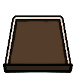

Scrap Master (nhân vật sự kiện + máy S.C.R.A.B)
Nhân vật kỷ niệm: lái máy S.C.R.A.B (Moving Scrap Castle) điều khiển trực tiếp (control scheme SCRAP_MASTER_MACHINE), có EXP/level riêng trong run (ScrapMasterData: exp, level, list_ExpRequirement), lên cấp chọn 1 nâng cấp (Obj_UI_ScrapMasterUpgradeCard) giữ c
Mô tả
- Nhân vật kỷ niệm: lái máy S.C.R.A.B (Moving Scrap Castle) điều khiển trực tiếp (control scheme SCRAP_MASTER_MACHINE), có EXP/level riêng trong run (ScrapMasterData: exp, level, list_ExpRequirement), lên cấp chọn 1 nâng cấp (Obj_UI_ScrapMasterUpgradeCard) giữ cả run: Cannon System (dmg 30→100, mỗi 4→3 s), Missile System (2→5 dmg × 8→24 tên lửa, 4→2 s), Machine Gun (1→3 dmg, 10→30 viên/s), platform 1x1 (×6), 2x2 (×6), 3x3 (×1), Platform Enhancement Damage +10…100 %, Range +5…50 %. Bắt đầu với Scrap Tower + Scrap Tank Tower + relic Scrap Master's Note/Wrench/Boots; skill Overcharge (mini-game nút 1–9) và Focus Fire thay bằng skill máy (ScrapMasterOverchargeBuff 3042, AreaDeployScrapTowerBuff 3043).
- GameplayData.scrapMasterData khởi tạo (exp 0, level 0). Trong battle: kill/hit bằng máy (ScrapMasterWeaponDealDamageToMonster) sinh EXP (RequestCollectAllScrapMasterExp) → AddExp → level up (GetExpRequirementForLevel từ list_ExpRequirement) → OnScrapMasterLevelUp → chọn upgrade (IncreaseSkillLevel(skillType), IsSkillMaxLevel theo list_Attributes length) → OnScrapMasterLevelUpComplete. Máy: AObj_ScrapMasterMachineWeapon bắn theo skill level (damage/speed/shootCount); platform trên máy cho phép đặt tháp (TOWER_ENHANCE_*); RequestOverchargeScrapMasterMachine mini-game. Save: LoadFromSavedLevelAndExp/RecordSavedLevelAndExp giữa stage. Achievement SCRAP_MASTER_MAX_LEVEL, SCRAP_MASTER_SOLO; MiscRecord.UsedScrapMasterBefore.
Hình minh hoạ

Lưu ý
Mở khóa & điểm vào
Clear Void Depths bất kỳ độ khó (SCRAP_MASTER_UNLOCK); IsSpecialEventCharacter.
Điểm vào:
- Chọn nhân vật SCRAP_MASTER
- RequestSwitchScrapMachineControl / RequestShowScrapMasterMachineUI
- RequestAddScrapMasterExp; OnScrapMasterLevelUp
Cách hoạt động
- Lên cấp máy: OnScrapMasterLevelUp → UI 'Choose an upgrade!' (3 thẻ?) → IncreaseSkillLevel; SetFirstSkillLearned → Upgrade effects last for the entire run
- Điều khiển máy: Control scheme SCRAP_MASTER_MACHINE: di chuyển, chọn vùng mục tiêu → Cannon: {0} dmg vùng mỗi 4 s; Missile: {1} dmg × {0} quái ngẫu nhiên mỗi 4 s; Machine gun: {0} viên/s × {1} dmg vào quái gần tâm → Overcharge: eOverchargeType nhiệm vụ bấm nút
- Platform trên máy: IsLearnedAnyPlatformSkill → RegisterDynamicPlacementObject (IDynamicPlacementTarget, size list) → Tháp đặt lên platform nhận +dmg/+range theo TOWER_ENHANCE → Máy di chuyển mang tháp theo (UpdateAfterMovedBySceneObjects)
Luồng chi tiết theo code
GameplayData.scrapMasterData khởi tạo (exp 0, level 0). Trong battle: kill/hit bằng máy (ScrapMasterWeaponDealDamageToMonster) sinh EXP (RequestCollectAllScrapMasterExp) → AddExp → level up (GetExpRequirementForLevel từ list_ExpRequirement) → OnScrapMasterLevelUp → chọn upgrade (IncreaseSkillLevel(skillType), IsSkillMaxLevel theo list_Attributes length) → OnScrapMasterLevelUpComplete. Máy: AObj_ScrapMasterMachineWeapon bắn theo skill level (damage/speed/shootCount); platform trên máy cho phép đặt tháp (TOWER_ENHANCE_*); RequestOverchargeScrapMasterMachine mini-game. Save: LoadFromSavedLevelAndExp/RecordSavedLevelAndExp giữa stage. Achievement SCRAP_MASTER_MAX_LEVEL, SCRAP_MASTER_SOLO; MiscRecord.UsedScrapMasterBefore.
Số liệu chính
| Chỉ số | Giá trị | Nguồn |
|---|---|---|
| ScrapMasterSettingData | Cannon L1–8: dmg 30,40,50,60,70,80,90,100 / speed 4,4,4,4,4,3,3,3; Missile: dmg 2,2,3,3,4,4,5,5 / speed 4,4,4,3,3,3,2,2 / count 8,12,16,16,16,20,20,24; Machine gun: dmg 1,1,2,2,2,3,3,3 / rate 10,14,14,18,22,22,26,30; Platform 1x1 ×6, 2x2 ×6, 3x3 ×1; Enhance dmg 10–100 % (10 cấp), range 5–50 % (10 cấ | Resources/ScrapMasterSettingData.asset |
| list_ExpRequirement | (khởi tạo trong ScrapMasterData.Initialize — chưa đọc giá trị) | ScrapMasterData |
Ghi chú thiết kế
- Lưu trữ: GameplayData.scrapMasterData (exp, level, list_SkillLevelData, lastSaved*)
- Lưu trữ: MiscRecord.UsedScrapMasterBefore
Use case (3)
Bấm vào từng use case để mở. Mở/đóng tất cả
UC-01 Lên cấp máy
Các bước- OnScrapMasterLevelUp → UI 'Choose an upgrade!' (3 thẻ?)
- IncreaseSkillLevel; SetFirstSkillLearned
- Upgrade effects last for the entire run
| Actor | Player |
|---|---|
| Trigger | exp ≥ GetNextExpRequirement |
| Điều kiện | !IsMaxLevel (GetTotalSkillLevel) |
| Evidence | ScrapMasterData.AddExp; ScrapMasterData.IncreaseSkillLevel; loc SCRAP_MASTER_LEVEL_UP_* |
UC-02 Điều khiển máy
Các bước- Control scheme SCRAP_MASTER_MACHINE: di chuyển, chọn vùng mục tiêu
- Cannon: {0} dmg vùng mỗi 4 s; Missile: {1} dmg × {0} quái ngẫu nhiên mỗi 4 s; Machine gun: {0} viên/s × {1} dmg vào quái gần tâm
- Overcharge: eOverchargeType nhiệm vụ bấm nút
| Actor | Player |
|---|---|
| Trigger | RequestSwitchScrapMachineControl |
| Evidence | AObj_ScrapMasterMachineWeapon; eControlScheme.SCRAP_MASTER_MACHINE; eOverchargeType |
UC-03 Platform trên máy
Các bước- IsLearnedAnyPlatformSkill → RegisterDynamicPlacementObject (IDynamicPlacementTarget, size list)
- Tháp đặt lên platform nhận +dmg/+range theo TOWER_ENHANCE
- Máy di chuyển mang tháp theo (UpdateAfterMovedBySceneObjects)
| Actor | Player |
|---|---|
| Trigger | Học PLATFORM_1x1/2x2/3x3 |
| Evidence | ScrapMasterData.IsLearnedAnyPlatformSkill; ObjectPlacementHandler.OnRegisterDynamicPlacementObject; ABaseTower.SetDynamicPlacementTarget |
Cấu hình (2)
Gộp mọi nguồn: const trong code, JSON mặc định trong Resources, bảng static, storage key, AB test, cờ server.
| Nguồn | Key | Kiểu | Giá trị | Ý nghĩa | Nơi định nghĩa |
|---|---|---|---|---|---|
| asset | ScrapMasterSettingData | table | Cannon L1–8: dmg 30,40,50,60,70,80,90,100 / speed 4,4,4,4,4,3,3,3; Missile: dmg 2,2,3,3,4,4,5,5 / speed 4,4,4,3,3,3,2,2 / count 8,12,16,16,16,20,20,24; Machine gun: dmg 1,1,2,2,2,3,3,3 / rate 10,14,14,18,22,22,26,30; Platform 1x1 ×6, 2x2 ×6, 3x3 ×1; Enhance dmg 10–100 % (10 cấp), range 5–50 % (10 cấp) | appendix/scrapmaster.md | Resources/ScrapMasterSettingData.asset |
| code const | list_ExpRequirement | int[] | (khởi tạo trong ScrapMasterData.Initialize — chưa đọc giá trị) | ScrapMasterData |
Giao diện (UI)
| Element | Class | Mục đích |
|---|---|---|
| Machine UI | RequestShowScrapMasterMachineUI | |
| Upgrade card | Obj_UI_ScrapMasterUpgradeCard | Level, title, desc |
| Craft tower | UI_CraftTower / UI_ToggleCraftTowerUI | Chế tháp từ scrap (suy luận) |
Storage keys
GameplayData.scrapMasterData (exp, level, list_SkillLevelData, lastSaved*) MiscRecord.UsedScrapMasterBefore
Chưa đọc được / ghi chú
- Bảng EXP mỗi cấp (list_ExpRequirement) nằm trong Initialize chưa đọc số
- Cơ chế nhận EXP (mỗi kill? mỗi damage?) chưa xác định
Tính năng liên quan
Nhân vật (11) Kỹ năng người chơi (Overcharge/Focus Fire/Unlock) Tháp (Towers)
Nguồn đã đọc
- appendix/scrapmaster.md
- features/ScrapMasterData.md
- features/ScrapMasterSettingAssetData.md
- appendix/loc-en.txt (Character SCRAP_MASTER_*)